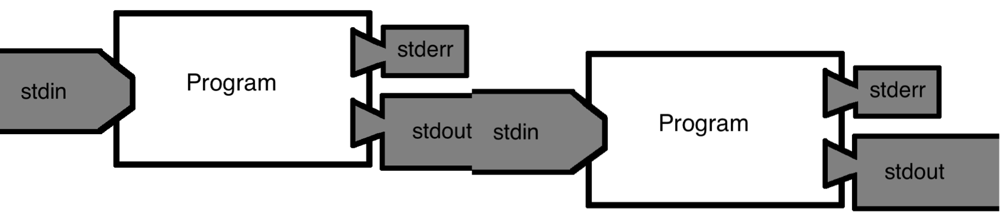

layout: true <div class="my-header"></div> <div class="my-footer"><img src="../../_images/BareBonesBash_Icon.png" /></div> --- class: center, middle # .large[**Bare Bones Bash**] Thiseas C. Lamnidis Aida Andrades Valtueña <br/> <br/> <br/> <a rel="license" href="http://creativecommons.org/licenses/by-sa/4.0/"> <img alt="Creative Commons License" style="border-width:0" src="https://i.creativecommons.org/l/by-sa/4.0/88x31.png" /> </a> .small[<br />This work is licensed under a <br/> <a rel="license" href="http://creativecommons.org/licenses/by-sa/4.0/">Creative Commons Attribution-ShareAlike 4.0 International License</a>.] --- # Aims of this session - Aim: - Familiarise yourself with basic concepts and commands of bash -- - Objectives - What is a terminal? What is a command prompt? - What is the difference between Absolute and Relative paths? - How can you move around the filesystem and interact with files and/or directories? - What are data streams, pipes, and redirects? - Finding documentation for bash tools. - What is a variable? - Difference between `'` and `"`! - Parameter expansion!! --- class: center, middle # The Five Commandments of Bare Bones Bash --- class: middle .left-column[ ### 1. Be lazy! <br><br><br><br><br><br><br><br><br><br><br><br><br><br> ] .right-column[ - Desire for shortcuts motivates you to explore more! ] ??? It's better to spend 1day working on a script that will save you 5min per day for the rest of your PhD, than putting in those 5 minutes! TAB will be you favourite key by the time we are done here. --- class: middle .left-column[ ### 1. Be lazy! ### 2. ~~Google~~ The Hive-Mind knows everything.<br><br><br><br><br><br><br><br><br><br><br><br><br> ] .right-column[ - Desire for shortcuts motivates you to explore more!<br><br><br> - 99% of the time, someone else has already had the same issue. ] ??? HOW to google programming questions is not as trivial as it sounds. It is a skill you will develop with time. --- class: middle .left-column[ ### 1. Be lazy! ### 2. ~~Google~~ The Hive-Mind knows everything. ### 3. Document everything you do.<br><br><br><br><br><br><br><br><br><br><br><br> ] .right-column[ - Desire for shortcuts motivates you to explore more!<br><br><br> - 99% of the time, someone else has already had the same issue.<br><br><br><br> - Make future you happy ] --- class: middle .left-column[ ### 1. Be lazy! ### 2. ~~Google~~ The Hive-Mind knows everything. ### 3. Document everything you do. ### 4. There will ALWAYS be a typo!<br><br><br><br><br><br><br><br><br><br><br> ] .right-column[ - Desire for shortcuts motivates you to explore more!<br><br><br> - 99% of the time, someone else has already had the same issue.<br><br><br><br> - Make future you happy<br><br><br><br> - Don't get disheartened, even best programmers make mistakes ] --- class: middle .left-column[ ### 1. Be lazy! ### 2. ~~Google~~ The Hive-Mind knows everything. ### 3. Document everything you do. ### 4. There will ALWAYS be a typo! ### 5. Don't be afraid of you freedom!<br><br><br><br><br><br><br><br><br><br> ] .right-column[ - Desire for shortcuts motivates you to explore more!<br><br><br> - 99% of the time, someone else has already had the same issue.<br><br><br><br> - Make future you happy<br><br><br><br> - Don't get disheartened, even best programmers make mistakes<br><br><br><br> - Explore! Try out things! ] ??? In my experience, most of learning in programming happens by failing. Repeatedly! --- class: center middle # Preparation! --- class: center <p align="left"><img src=".images/Terminal.png" width="100%" ></p> ??? What you see here is the "command prompt". username@server:pwd $ User: ubuntu Server: spaam2022christoslamnidisth-d13ec pwd: ~ (in blue) me, at the workshop server. ~ means "my HOME directory" (user specific). --- name: mind-the class: middle, center # Always mind the `$` and `>`! <p align="center"> <img title="Source: https://giphy.com/gifs/studiosoriginals-gilphabet-3o84U72tKO389H2lI4" src="https://media.giphy.com/media/3o84U72tKO389H2lI4/giphy.gif" width = "54%"> <img title="Source: https://giphy.com/gifs/animography-animated-typography-font-gzJNFeqcRcqnm" src="https://media.giphy.com/media/gzJNFeqcRcqnm/giphy.gif" width="30%"> </p> ??? in Bash ALWAYS MIND THE `$`! Only copy after the `$` so you don't paste the command prompt too. `$` is also important when dealing with variables, which you saw a bit last time and will see more of today. In this presentation we will use `$` at the start of a line of code to show where the command prompt would be. We will use `>` to denote the subsequent lines of a multi-line code command. --- # Absolute and Relative paths In addition to your command prompt, you can use `pwd` to see your current directory ```bash $ pwd ``` --- # Absolute and Relative paths In addition to your command prompt, you can use `pwd` to see your current directory ```bash $ pwd ``` ``` /home/ubuntu ``` ??? That's not what the command prompt shows! what is up here? -- - `~` is a **relative** path, while `pwd` returns an **absolute** path --- # Let's talk about paths! .left-column-66[ You have just arrived to Leipzig for a summer school that is taking place at MPI-EVA. After some questionable navigation, you find yourself at the Bayerische Bahnhof. Tired and disheartened, you decide to ask a local. ] --- # Let's talk about paths! .left-column-66[ You have just arrived to Leipzig for a summer school that is taking place at MPI-EVA. After some questionable navigation, you find yourself at the Bayerische Bahnhof. Tired and disheartened, you decide to ask a local. You see a friendly-looking metalhead, and decide to ask them for directions! ] --- # Let's talk about paths! .left-column-66[ You have just arrived to Leipzig for a summer school that is taking place at MPI-EVA. After some questionable navigation, you find yourself at the Bayerische Bahnhof. Tired and disheartened, you decide to ask a local. You see a friendly-looking metalhead, and decide to ask them for directions! ] .left-column-33[<p align="center"><img src="../../_images/bbb_james.png" width="35%" > <figcaption align="center"><i>A friendly-looking metalhead.</i></figcaption></p> ] .medium[ Happy to help, but I only use **absolute paths.** From Leipzig Hbf, take Querstraße southward. Continue straight and take Nürnberger Str. southward until you reach Str. des 18 Oktober. Finally take Str. des 18 Oktober. moving southeast until you reach EVA! ] ??? That is the equivalent of an absolute filepath. It will ALWAYS take you to EVA, but you can only apply these directions if you start from Leipzig Hbf! -- Examples of absolute paths: `/home/ubuntu` `/Hbf/Querstraße/Nürnberger_Str/Str_18_Oktober/Deutscher_Platz/EVA` --- # Let's talk about paths! Not sure how to get back to Leipzig Hbf to apply those directions, you decide to ask someone else for directions. -- .left-column-33[ <p align="center"><img src="../../_images/bbb_aida.png" width="35%" > <figcaption align="center"><i>A friendly-looking local.</i></figcaption></p> ] <br><br><br> .medium[ This street is Str. des 18 Oktober. Walk straight that way till you walk past the tram tracks and you will reach EVA! ] ??? These directions are equivalent to a relative path! They are easy to follow, but only work when you happen to be at the Bayerischer Bahnhof! -- <br><br><br><br><br> Examples of relative paths: `~` `./Str_18_Oktober/Deutscher_Platz/EVA` --- # The different types of file paths #### Absolute - The location of a file or folder, __from the “root” directory__ (`/`). #### Relative - The location of a file or folder, __from your current directory.__ <br><br><br> -- When writing code it is better to use **absolute** paths, so your code works independently of the users's current directory! --- # Basic bash commands - **List** directory contents: ```bash $ ls ``` ``` Desktop Downloads 'MEGA X' Pictures Templates bin Documents M11CC_Out Music Public Videos thinclient_drives ``` --- # Basic bash commands - **List** directory contents: ```bash $ ls ``` - **Make** a directory: ```bash $ mkdir barebonesbash ``` --- # Basic bash commands - **List** directory contents: ```bash $ ls ``` - **Make** a directory: ```bash $ mkdir barebonesbash ``` - **Move** (or rename) files and directories ```bash $ mv barebonesbash BareBonesBash ``` --- # Basic bash commands - **List** directory contents: ```bash $ ls ``` - **Make** a directory: ```bash $ mkdir barebonesbash ``` - **Move** (or rename) files and directories ```bash $ mv barebonesbash BareBonesBash ``` - **Change** directories ```bash $ cd BareBonesBash ``` ??? You should also see the current directory in your command prompt change! --- # Basic bash commands - **Download** a remote file to your computer ```bash $ wget git.io/Boosted-BBB-meta ``` ??? if you ls now you will see that a file called `Boosted-BBB-meta` has been downloaded. -- - **Copy** a file or directory to a new location ```bash $ cp Boosted-BBB-meta Boosted-BBB-meta.tsv ``` ??? A copy of the file now exists with a slightly different name than the original -- - **Remove** (delete) files ```bash rm Boosted-BBB-meta ``` ??? Only the copy exists now. --- # Basic bash commands - Con**cat**enate file contents to screen ```bash $ cat Boosted-BBB-meta.tsv ``` --- # Basic bash commands - Con**cat**enate file contents to screen ```bash $ cat Boosted-BBB-meta.tsv ``` - See only the **first**/**last** 10 lines of a file ```bash $ head -n 10 Boosted-BBB-meta.tsv $ tail -n 10 Boosted-BBB-meta.tsv ``` --- # Basic bash commands - Con**cat**enate file contents to screen ```bash $ cat Boosted-BBB-meta.tsv ``` - See only the **first**/**last** 10 lines of a file ```bash $ head -n 10 Boosted-BBB-meta.tsv $ tail -n 10 Boosted-BBB-meta.tsv ``` - Look at the contents of a file **interactively** (quit with `q`) ```bash $ less Boosted-BBB-meta.tsv ``` -- - __Count__ the number of __l__ines in a file ```bash $ wc -l Boosted-BBB-meta.tsv ``` --- class: center,middle # Datastreams, # Piping, # and redirects ??? Next we will talk about three linked concepts. Datastreams (the inputs and outputs of a script), Piping (bash's way to hook up multiple tools into a single command), and Redirects (directing these data streams into files or the screen) --- # Datastreams Programs can take in and spit out data from different _streams_. By default there are 3 such data streams. ??? THISEAS Before we talk about redirects, you need to understand datastreams. -- .left-column[ - `stdin`: the __st__an__d__ard __in__put - `stdout`: the __st__an__d__ard __out__put - `stderr`: the __st__an__d__ard __err__or ] ??? stderr is what is usually printed on your screen, while stout is generally what ends up in output files, but it also goes to your screen by default. -- .right.column[ <p align="center"> <img src=".images/Datastreams.png" width="50%"> </p>] ??? In the background, each program also broadcasts an `exit code` which tells you if the program encountered errors. You will never see these in the wild, but it's good to know they exist. --- # Piping Piping lets you combine commands together using `|` ```bash $ head -n 10 Boosted-BBB-meta.tsv | wc -l ``` -- ``` 10 ``` --- # Piping Piping lets you combine commands together using `|` ```bash $ head -n 10 Boosted-BBB-meta.tsv | wc -l ``` <p>  </p> <br> <br> The `stdout` of one script becomes the `stdin` of the other. `stderr` is always printed on your screen. --- # Redirects Much like streams in the real world, datastreams can be redirected. ??? This way you can save the stdout of a program (or even the stderr) into a file to save for later. -- - `stdin` can be redirected with `<`. ??? An arrow pointing TO your program name! -- - `stdout` can be redirected with `>`. ??? An arrow pointing AWAY your program name! -- - `stderr` can be redirected with `2>`. ??? Because it is the secondary output stream. It is also possible to combine streams, but we won't get into that here. -- ```bash $ head -n 10 Boosted-BBB-meta.tsv | wc -l >linecount.txt $ cat linecount.txt ``` -- ``` 10 ``` -- You can then __remove__ the file we just made ```bash $ rm linecount.txt ``` --- # Finding the help you need You don't always have to google for documentation! Many programs come with in-built helptext, or access to online manuals right from your terminal! -- - You can get a __one sentence summary__ of what a tool does with `whatis` ```bash $ whatis cat ``` ``` cat(1) - concatenate files and print on the standard output ``` -- <br> - While `man` gives you __access to online manuals__ for each tool (exit with `q`) ```bash $ man cat ``` -- > **Activity**: What flag should you give `cat` to include line numbers in the output? --- class: middle, center # Variables --- # Variables A named container whose contents you can expand at will or change. ??? A variable is a container. You can place something in it and then access its contents by EXPANDING the variable. -- You can assign variables with `=` and pull their contents with `$` -- The easiest way to see the contents of a varable is using `echo`! ```bash $ echo "This is my home directory: $HOME" ``` ??? Called echo because the computer "literally prints out what you told it to" HOME is a variable that points to your home directory, and is already set. -- ``` This is my home directory: /home/ubuntu ``` -- <p align="center"> <img title="Source: http://visitgreece-gr.tumblr.com/" src="https://78.media.tumblr.com/04ac7d0699ac494a7ccb4fc9316bbc0a/tumblr_oo77m9RLgv1uwr1s7o1_500.gif" width="20%"> </p> <p align="center"><i>And now for a trip...</i></p> ??? Now let's go on a summer trip and see how variables work in action! --- # Variables ```bash $ GreekFood=4 #Here, 'GreekFood' is a number. $ echo "Greek food is $GreekFood people who want to know what heaven tastes like." ``` -- ``` Greek food is 4 people who want to know what heaven tastes like. ``` -- ```bash $ GreekFood=delicious #We overwrite that number with a word (i.e. a 'string'). $ echo "Everyone says that Greek food is $GreekFood." ``` -- ``` Everyone says that Greek food is delicious. ``` -- ```bash $ GreekFood="Greek wine" #We can overwrite 'GreekFood' again, ## but when there is a space in our string, we need quotations. $ echo "The only thing better than Greek food is $GreekFood!" ``` -- ``` The only thing better than Greek food is Greek wine! ``` -- ```bash $ GreekFood=7 #And, of course, we can overwrite with a number again too. $ echo "I have been to Greece $GreekFood times already this year, for the food and wine!" ``` -- ``` I have been to Greece 7 times already this year, for the food and wine! ``` --- # Quotes matter! In bash, there is a big difference between a single quote `'` and a double quote `"`! - The contents of single quotes, are passed on as they are. - Inside double quotes, contents are _interpreted_! ??? That means that it will be read just like the rest of the code. -- .left-column-66[ In some cases the difference doesn't matter: ```bash $ echo "I like Greek Food" $ echo 'I like Greek Food' ``` ``` I like Greek Food I like Greek Food ``` ] -- .left-column-66[ In other cases it makes all the difference: ```bash $ Arr=Banana $ echo 'Pirates say $Arr' $ echo "Minions say $Arr" ``` ] ??? You can already see from the syntax highlighting that $Arr is treated differently in the two quotes. --- # Quotes matter! In bash, there is a big difference between a single quote `'` and a double quote `"`! - The contents of single quotes, are passed on as they are. - Inside double quotes, contents are _interpreted_! .left-column-66[ In some cases the difference doesn't matter: ```bash $ echo "I like Greek Food" $ echo 'I like Greek Food' ``` ``` I like Greek Food I like Greek Food ``` ] .right-column-33[ <p align="center"><img src="https://media.giphy.com/media/NSqQkXJjnsVpZQezfg/giphy.gif" title="Source: https://media.giphy.com/media/NSqQkXJjnsVpZQezfg/" width="90%"> </p> <p align="center"><img src="https://media.giphy.com/media/bh4jzePjmd9iE/giphy.gif" title="Source: https://media.giphy.com/media/bh4jzePjmd9iE/" width="90%"> </p> ] .left-column-66[ In other cases it makes all the difference: ```bash $ Arr=Banana $ echo 'Pirates say $Arr' $ echo "Minions say $Arr" ``` ``` Pirates say $Arr Minions say Banana ``` ] --- class: center, middle # Parameter expansion --- # The basics Here's an example variable: ```bash $ foo="/home/thiseas/folder/subfolder/BBB.is.bae.txt" ``` ??? The absolute file path to some imaginary file. -- .left-column[ To expand a variable use `${}`. ```bash $ echo ${foo} ``` ``` /home/thiseas/folder/subfolder/BBB.is.bae.txt ``` ] .right-column[ <p align="center"><img src="https://media.giphy.com/media/8YpifFDs9Ux1VNQP1S/giphy.gif" title="Source: https://giphy.com/gifs/adweek-color-apple-8YpifFDs9Ux1VNQP1S/links" width="75%"> </p> ] ??? This is actually what bash did behind-the-scenes when we typed `$Var` thus far. It is a good idea to put all variables in `{}` so there is never any confusion as to which is the variable name. -- You can also add a **parameter** to expansions: ```bash $ echo ${foo#/home/} $ echo ${foo#*/} ``` ``` thiseas/folder/subfolder/BBB.is.bae.txt home/thiseas/folder/subfolder/BBB.is.bae.txt ``` ??? The first command strips the text after the # from the START of the variable. You can also use wildcards to make more general expansions. --- # Some parameters for expansion ```bash $ foo="/home/thiseas/folder/subfolder/BBB.is.bae.txt" $ echo ${foo} # No parameters in this expansion $ echo ${foo#*/} # Removes everything before the first '/' $ echo ${foo%.*} # What will this do? ``` -- ``` /home/thiseas/folder/subfolder/BBB.is.bae.txt home/thiseas/folder/subfolder/BBB.is.bae.txt /home/thiseas/folder/subfolder/BBB.is.bae ``` ??? Bash will look for the provided pattern ONCE and remove it. There are more `.` and `/` but they are not removed. -- These expansion can be generalised: ```bash $ echo ${foo##*/} # Removes everything before any '/' $ echo ${foo%%.*} # Removes everything after any '.' ``` -- ``` BBB.is.bae.txt /home/thiseas/folder/subfolder/BBB ``` ??? When the parameter is given twice, bash will keep searching for the pattern until it can no longer find it. --- # More parameters for expansion You can use two `/` to substitute parts of the variable: ```bash $ foo="/home/thiseas/folder/subfolder/BBB.is.bae.txt" $ echo ${foo} # No parameters $ echo ${foo/BBB/BareBonesBash} # Change BBB to BareBonesBash ``` ``` /home/thiseas/folder/subfolder/BBB.is.bae.txt /home/thiseas/folder/subfolder/BareBonesBash.is.bae.txt ``` --- # More parameters for expansion You can use two `/` to substitute parts of the variable: ```bash $ foo="/home/thiseas/folder/subfolder/BBB.is.bae.txt" $ echo ${foo} # No parameters $ echo ${foo/BBB/BareBonesBash} # Change BBB to BareBonesBash ``` ``` /home/thiseas/folder/subfolder/BBB.is.bae.txt /home/thiseas/folder/subfolder/BareBonesBash.is.bae.txt ``` Leaving the second `/` out replaces the pattern with "an empty string". ```bash $ echo ${foo/BBB} # Remove BBB ``` ??? That is programmer speak for "nothing". i.e. it removes the pattern. -- ``` /home/thiseas/folder/subfolder/.is.bae.txt ``` --- # The last parameter, I swear! Finally, you can check the length of a variable by using a `#` BEFORE the variable name. ```bash $ foo="/home/thiseas/folder/subfolder/BBB.is.bae.txt" $ echo ${#foo} # The length of the variable contents ``` -- ``` 45 ``` So the filepath in `foo` is 45 characters long! -- This parameter is more useful when dealing with **bash arrays** (i.e. lists of things). <p align="center"> <img src="https://media.giphy.com/media/xUNd9DLukkavmhybAs/giphy.gif " title="Source: https://media.giphy.com/media/xUNd9DLukkavmhybAs/giphy.gif " width="40%"> </p> ??? We will not be talking about bash arrays further, but they are basically indexed/numbered lists of stuff. That means you can, for example, ask for the 5th item in a bash array and get only that one. Look em up if that sounds useful to you! **[Rule 2]** --- # Recap You should now understand: .medium[ - The difference between the Terminal and the command prompt. - What information the command prompt includes.] -- .medium[ - The difference between absolute and relative file paths. ] -- .medium[ - What data streams are and how to redirect them into files. ] -- .medium[ - How piping works in bash. ] -- .medium[ - How to quickly find documentation about the tools you are using. ] -- .medium[ - What a variable is. - How to assign them and expand them. ] -- .medium[ - The difference between single and double quotes in bash. ] -- .medium[ - How you can use parameters to manipulate variable expansion on the fly! ] -- In the next session we will apply some of these concepts together with some new commands to clean up a messy file system. ??? But before that, let's briefly give a few pointers on how to google for help with bash and programming languages in general. --- # Accessing ~~Google~~ the hive-mind <br/> <p align="center"> <img title="Source: https://tenor.com/view/hitchhikers-guide-to-the-galaxy-leigh574-question-understand-wisdom-gif-12472040.gif" src="https://tenor.com/view/hitchhikers-guide-to-the-galaxy-leigh574-question-understand-wisdom-gif-12472040.gif" width="80%"> </p> ??? THISEAS --- # Knowing the question * ALWAYS include the name of the language in your query. .left-column[ <p align="center" class="center"> <img src=".images/How_to_cat.png" width="100%"> </p> ] .right-column[ <p align="center" class="center"> <img src=".images/How_to_cat_bash.png" width="100%"> </p> ] ??? It can make a HUGE difference! Also, you probably don't want to learn how to do it in a different language (yet). --- # Knowing the question * ALWAYS include the name of the language in your query. * Broaden your question. <br> <br> ---- .left-column-33[ "Hey Google! How to set __X__ to __4__ in bash?" ] .right-column-33[ "Hey Google! How to set a __variable__ to an __integer__ in bash?" ] <br> <br> <br> <br> <br> ---- --- # Knowing the question * ALWAYS include the name of the language in your query. * Broaden your question. * When you are more familiar, use fancy programmer lingo to make google think you know what you are talking about. __All the cool hackers say:__ - "_string_" and not "_text_". - "_float_" and not "_decimal_". - Some of these terms can be language specific.